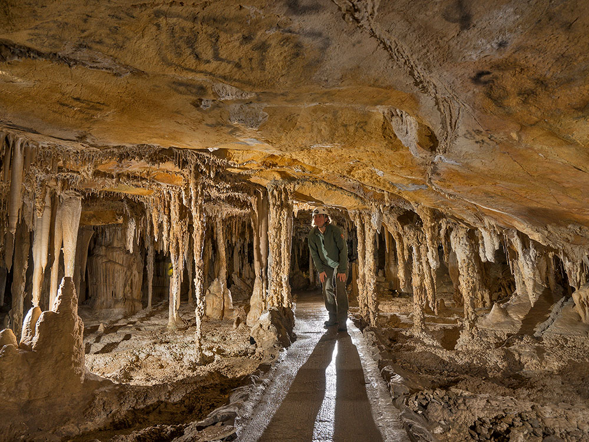
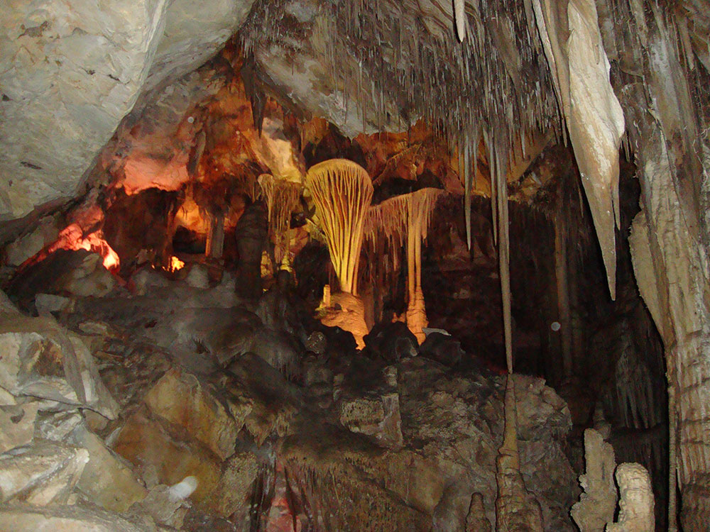
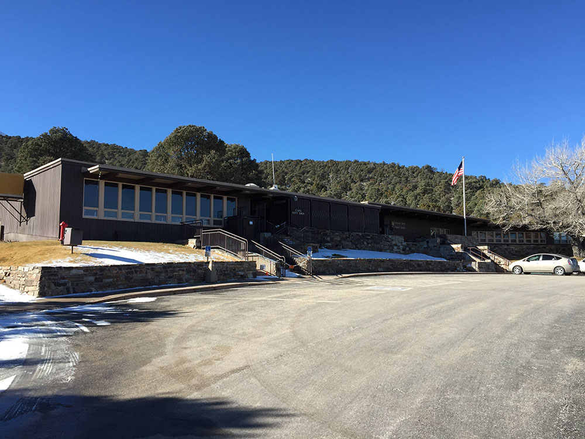
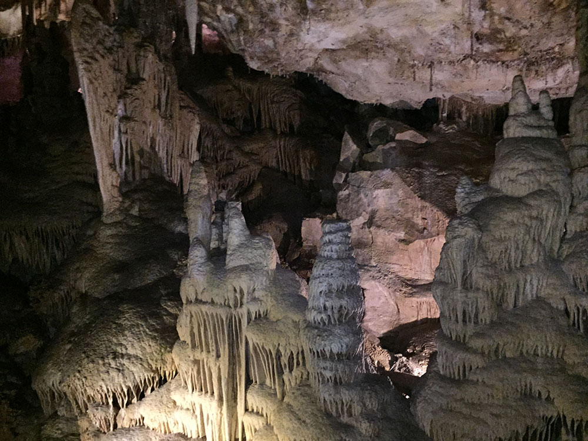

Caves made up of a marble and limestone solution that forms the many cave decorations throughout the caverns
Parachute Shield Tour (ONLY Tour Offered in 2021)
Lodge Room Tour (NOT Offered in 2021)
Grand Palace Tour (NOT Offered in 2021)
Summer Tour Schedule: May 28, 2021 to September 11, 2021
Parachute Shield Tour (60 minutes): 8:30am, 10am, 11:30am, 1pm, 2:30pm, 4pm
Fall Tour Schedule: September 12, 2021 to October 31, 2021
Cave tour schedule is to be determined.
Cave tours are offered daily, year-round, except for Thanksgiving Day, Christmas Day, and New Year's Day
Children (5 to 15 years): $6.00; Grand Palace Tour $8.00
Infants and Toddlers: Free
Pets are not permitted on trails or in the backcountry of the park, except leashed pets on the Lexington Arch Trail or the trail between Baker and the Great Basin Visitor Center.
Leashed pets can only be exercised in the campgrounds, in front of the visitor centers, and along roads.
Overview
Lehman Caves is one of the premier attractions within Great Basin National Park and is renowned for its remarkable collection of cave formations, including shield formations, stalactites, stalagmites, draperies, cave popcorn, and rare cave shields. Located on the eastern slopes of Nevada's Snake Range, the cave system was discovered in the late 1880s by rancher Absalom Lehman and has been welcoming visitors for generations. Today, the only way to enter the cave is through a ranger-led tour.
National Park Service guides lead visitors through illuminated passageways while explaining the cave's geology, history, fragile ecosystem, and unique formations. Because group sizes are limited and demand is often high during the summer season, advance reservations are strongly recommended. Guided cave tours are among the most popular activities in Great Basin National Park and frequently sell out during peak visitation periods.
Do You Need Reservations?
| Question | Answer |
|---|---|
| Are cave tours guided? | Yes. All access to Lehman Caves is through ranger-led tours. |
| Are self-guided cave tours available? | No. |
| Can reservations be made in advance? | Yes, through Recreation.gov. |
| Do tours sell out? | Commonly during summer and holiday periods. |
Advance reservations are highly recommended, especially from late spring through early fall. Limited same-day tickets may occasionally be available, but popular tour times often sell out well in advance.
Ranger-Led Cave Tours
| Tour | Duration | Difficulty | Overview |
|---|---|---|---|
| Lodge Room Tour | Approximately 60 Minutes | Easy to Moderate | The most popular introductory tour featuring many of the cave's famous formations and historic rooms. |
| Grand Palace Tour | Approximately 90 Minutes | Moderate | Extended exploration reaching deeper sections of the cave and additional formations. |
| Parachute Shield Tour | Approximately 90 Minutes | Moderate | Highlights the cave's famous shield formations, including the spectacular Parachute Shield. |
| Wild Cave Tour | Several Hours | Strenuous | Adventure experience involving crawling, helmets, headlamps, and exploration of undeveloped cave passages. |
Tour Highlights
| Feature | Description |
|---|---|
| Shield Formations | Rare geological formations for which Lehman Caves is internationally known. |
| Lodge Room | One of the largest and most accessible chambers within the cave. |
| Parachute Shield | A spectacular example of the cave's signature shield formations. |
| Talus Room | Features impressive cave decorations and breakdown formations. |
| Historic Cave Passages | Areas visited by some of the earliest cave explorers and tourists. |
Typical Pricing
| Tour Type | Typical Adult Cost |
|---|---|
| Lodge Room Tour | Approximately $15 |
| Grand Palace Tour | Approximately $15 |
| Parachute Shield Tour | Approximately $15 |
| Wild Cave Tour | Approximately $55-$65 |
Lehman Cave tour fees are separate from park access. Great Basin National Park itself does not charge an entrance fee, making the cave tour the primary visitor expense within the park.
Tour Conditions
- Cave temperature remains around 50°F (10°C) year-round.
- Jackets or long sleeves are recommended.
- Sturdy walking shoes are strongly encouraged.
- Most tours require navigating stairs and uneven surfaces.
- Food, drinks, and touching cave formations are prohibited.
Reservation Information
- Reservations are available through Recreation.gov.
- Summer tours frequently sell out.
- Holiday weekends are especially competitive.
- Visitors should arrive early at the visitor center before their scheduled tour.
Best Tours for First-Time Visitors
- Lodge Room Tour for the best overall introduction to Lehman Caves.
- Grand Palace Tour for visitors seeking a longer and more comprehensive cave experience.
- Parachute Shield Tour for those particularly interested in rare cave formations.
- Wild Cave Tour for adventurous visitors looking for a hands-on caving experience.
Information in this article is based on cave tour descriptions, reservation policies, and visitor guidance provided by the https://www.nps.gov/grba/planyourvisit/lehman-caves-tours.htmGreat Basin National Park Lehman Caves Tours page and the https://www.recreation.gov/Recreation.gov reservation system for cave tour reservations and visitor planning.
This article uses material from the Wikipedia article "Great Basin National Park", which is released under the Creative Commons Attribution-Share-Alike License 3.0
This article uses material from nps.gov "Great Basin National Park"






